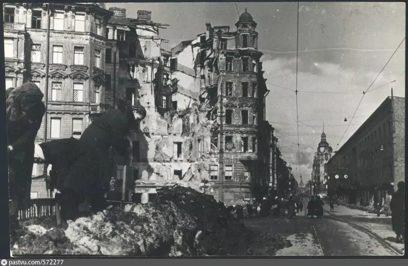
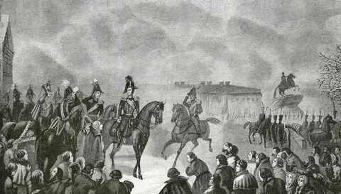
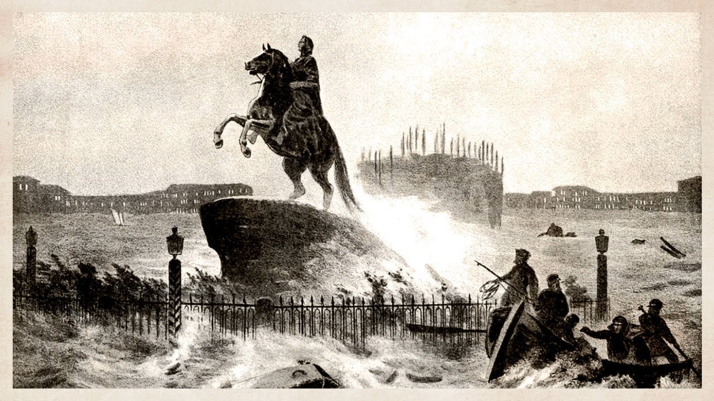

Летопись Города
События великого Петербурга

1703: Основание
История о том, как Пётр I заложил первый камень великого города на суровых берегах Невы.
Читать далее
1941-1944: Блокада
872 дня мужества. Великий подвиг ленинградцев, выстоявших в нечеловеческих условиях.
Читать далее
Имперский стиль
Эпоха пышных дворцов, балов и уникальной архитектуры, ставшей лицом Северной столицы.
Читать далее
1825: Площадь Свободы
Драматическое восстание на Сенатской площади, изменившее ход русской истории.
Читать далее
1917: Смена эпох
Залп «Авроры», падение империи и рождение нового мира в колыбели трех революций.
Читать далее
1824: Во власти стихии
Самое разрушительное наводнение в истории города, воспетое в поэме «Медный всадник».
Читать далее